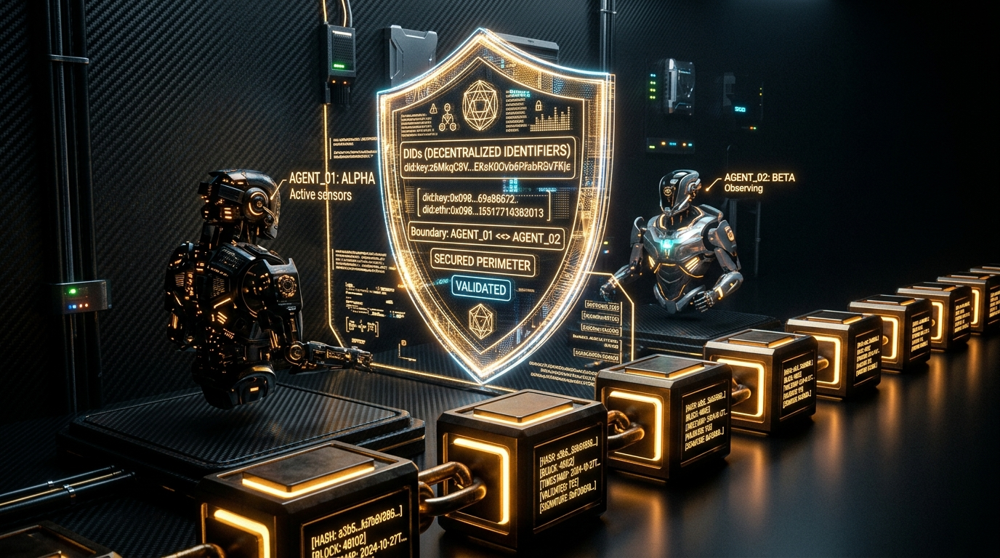

**Goal:** Analyze the shift in AI consulting delivery methodologies and technology stacks in 2026, specifically detailing the transition from single-model pilot wrappers to deploying complex, secure, and scaled multi-agent autonomous orchestration systems.
In 2026, the AI consulting landscape has undergone a fundamental transformation, moving away from the "pilot wrapper" era of 2023–2024 toward industrialized, multi-agent autonomous orchestration. This shift represents a transition from simple prompt-response cycles to complex, stateful, and secure ecosystems capable of enterprise-scale execution.
The primary evolution in 2026 is the abandonment of monolithic "wrapper" architectures—where a single model was tasked with end-to-end logic—in favor of Multi-Agent Systems (MAS). Consulting project lifecycles are now defined by agentic workflows using graph-based reasoning (such as LangGraph) and the Model Context Protocol (MCP).
The modern AI tech stack is now categorized into five distinct layers: Advanced Orchestration, Persistent Memory, Heterogeneous Routing, Decentralized Execution, and Multimodal Interfaces.
As agents gain more autonomy, the security perimeter has shifted to the agent-to-agent (A2A) level. The "vibe checks" of 2024 have been replaced by rigorous Reasoning vs. Action audits.

Scaling multi-agent systems requires a departure from traditional Application Performance Monitoring (APM). Linear tracing is insufficient for the branching paths of agentic reasoning.
The role of the AI consultant has consequently shifted from a "Prompt Engineer" to a "System Architect." Their focus is no longer on individual model outputs but on the robustness of distributed orchestration layers and the implementation of active, real-time guardrails to manage autonomous agent behavior.
By 2026, AI delivery has matured into a disciplined engineering field. The transition from single-model pilots to autonomous multi-agent systems has prioritized security, memory persistence, and complex orchestration. For consultants, the value proposition has moved from "building a bot" to "architecting a secure, self-optimizing agentic workforce."